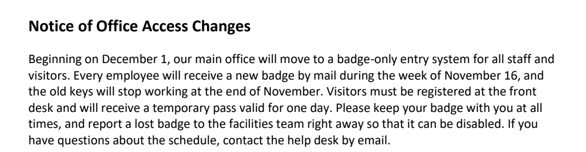
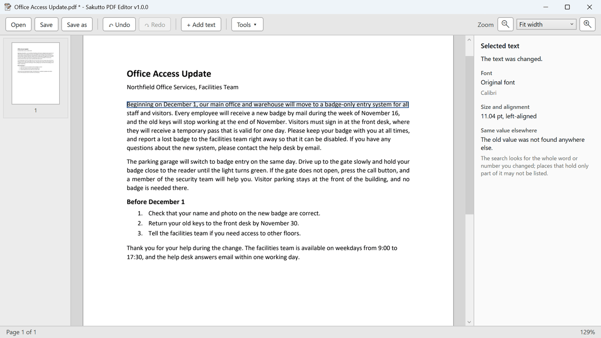
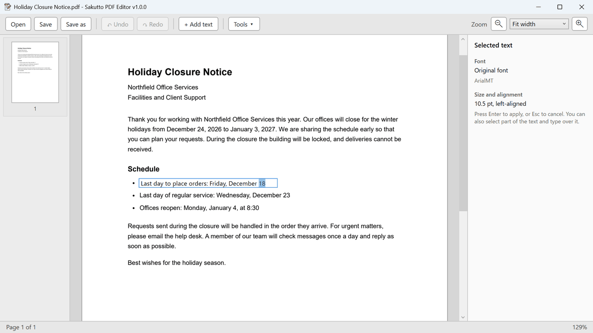
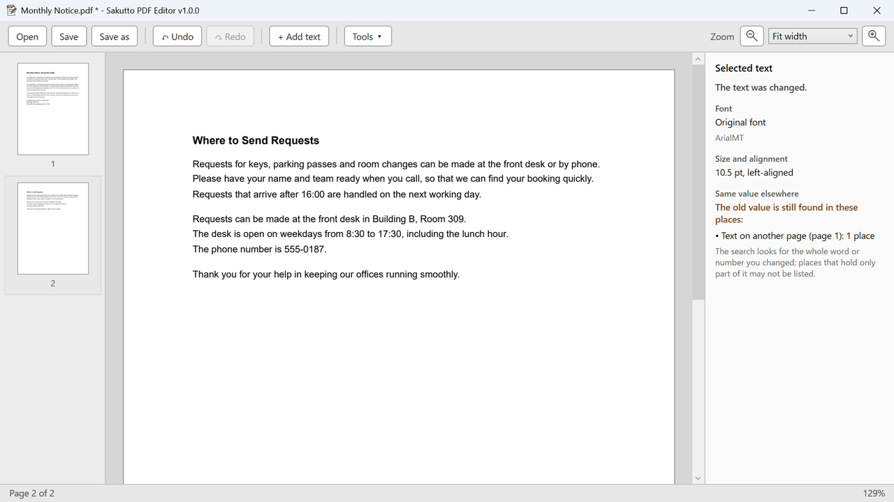
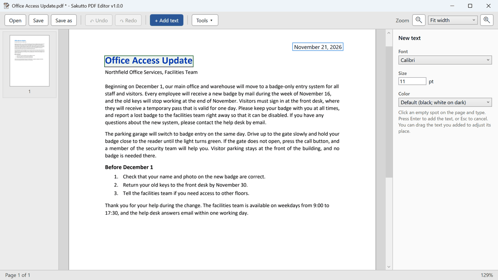
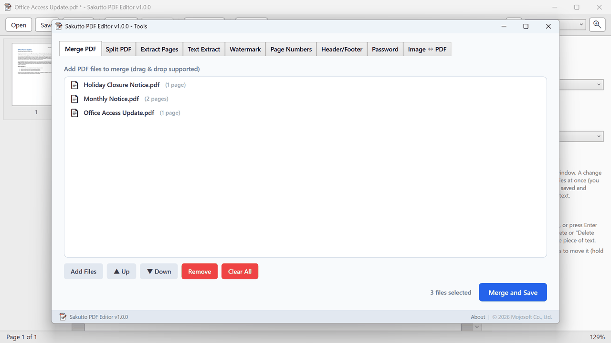

v1.0.0
First release (retype, add, move, delete and restyle text; paragraph rewrap; nine page tools).
PDF text editor for WindowsVersion 1.0.0, November 2026
Sakutto PDF Editor lets you click on the text in a PDF and retype it right on the page. Fix typos, update dates and names, add or move text, and rewrap paragraphs. It works fully offline, and your PDFs are never uploaded.
$25.49one-time
Get it from Microsoft StoreBuy it on the Microsoft Store and start right away. No sign-up for the app. U.S. price; prices vary by country, and the Microsoft Store shows yours.
BeforeThe original PDF. The red marks were drawn on this page to show the changes (two new dates and one added sentence).

AfterThe PDF as edited and saved with Sakutto PDF Editor 1.0.0. The red underlines mark the changes; they are drawn on top of the image.


Click Open or drag a PDF onto the window. Page thumbnails appear on the left, the page in the middle, and the selected text's details on the right.

Click the text to select it, then click again to open an edit box in place. Retype, then press Enter to confirm or Esc to cancel. Right-aligned numbers in a table keep their right edge.

Before you save, check for places you missed. If the old value (such as a phone number or a date) still appears on other pages, the right panel lists where. The first save always asks where to save and suggests the original name plus "_edited", so the original file stays as it is.
You can fix the PDF itself, even without the file it was made from.
It's made for fixing typos in your own documents, updating the dates, years and names in templates you reuse, adding a sentence to a notice, and filling in forms that have no input fields.
Click on text and type the correction in place.
Uses the original font whenever it can. Otherwise it uses the same font from your PC or a bundled font, and tells you so. Right-aligned numbers keep their right edge. If the new text is too long, "Fit to width" makes it fit.
Edit a multi-line paragraph in one edit box.
Added words flow to the next line, and removed words pull the next line up. Lines before your change stay put. Works on horizontal, left-aligned (including justified) paragraphs in a single style.
Write anywhere on the page.
Put your name and the date on a form with no input fields, for example. Set the default font and size under "Settings…". You can change the style and position later.
Move original text as well as text you added.
Drag, or use the arrow keys (0.5 pt per press, 5 pt with Shift). Guides and snapping line text up with nearby lines and edges. Text in table cells moves without getting cut off.
Restyle existing text, too.
Fonts: the original font, bundled sans-serif, serif and Latin fonts, or fonts on your PC. Sizes from 4 to 96 pt. Colors: current color, black, red or blue.
Delete a selected block with the Delete key.
Undo (Ctrl+Z) and redo (Ctrl+Y) go one step per action.

The title was changed to blue, 20 pt, and a date is being typed at the top right with "+ Add text". The right panel shows the font, size and color for the new text.
Open them from the Tools menu to combine, divide and finish your PDFs.

Nine tabs switch between the tools. Here three fictional notices are listed on the Merge tab.
See the Privacy Policy for details.
Please check what the app can and can't do before you buy.
| Opens | PDF. PDFs that need a password to open can be opened with the password. |
|---|---|
| Editable text | Horizontal text in PDFs that contain text (for example, PDFs made from office or design software). PDFs with editing restrictions can be edited after entering the owner (permissions) password. |
| Not editable |
|
| Styles | Fonts: the original font, bundled Noto Sans JP, Noto Serif JP and Liberation Sans, or fonts on your PC that allow embedding Sizes: 4–96 pt / Colors: current color, black, red, blueNo bold/italic toggle. Selecting or moving several blocks at once is not supported. |
| Paragraph rewrap | Horizontal, left-aligned (including justified) paragraphs written in a single style.Rewritten lines are left-aligned. Tables and pictures below a paragraph are not moved, so a paragraph can't grow into space that is already taken (the app tells you why). Paragraphs that can't be rewrapped can still be edited line by line. |
| Calculations | Changing a number in a table does not recalculate totals. |
| Saving | Save (Ctrl+S) and Save as (Ctrl+Shift+S). The first save always asks where to save (suggested name ends with "_edited"). Password-protected PDFs can be saved with their password or with the password removed.The search for remaining old wording looks for the whole word or number you replaced; places that contain only part of it may not be listed. |
| Nine page tools | Merge, split, extract pages, extract text, watermark, page numbers, header/footer, password, image ↔ PDFPDF → image: PNG or JPEG (72, 150 or 300 dpi) / Image → PDF: PNG, JPEG, BMP, GIF, TIFF |
| App language | English and Japanese (follows your Windows language setting) |
| Requirements | Windows 10 (version 2004) or later, 64-bit |
| Price | $25.49 in the U.S. Microsoft Store, one-time purchase (prices vary by country) |
First release (retype, add, move, delete and restyle text; paragraph rewrap; nine page tools).
The Microsoft Store version updates automatically.
Prices vary by country; the Microsoft Store shows yours.